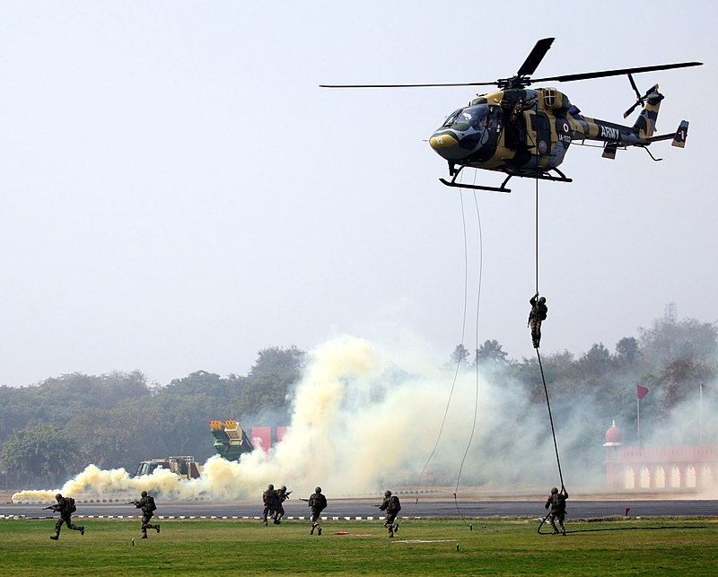

Army Day
Army Day is celebrated on 15 January every year in India, in recognition of Field Marshal Kodandera M. Cariappa's (then a Lieutenant General) taking over as the first Commander-in-Chief of the Indian Army from General Francis Roy Bucher ,

the last British Commander-in-Chief of India, on 15 January 1949.
The day is celebrated in the form of parades and other military shows in the national capital New Delhi as well as in all headquarters. On 15 January 2022, India celebrated its 74th Indian Army Day in New Delhi. Army Day marks a day to salute the valiant soldiers who sacrificed their lives to protect the country and its citizens.
While celebrations take place across the country, the main Army Day parade is conducted in Cariappa Parade ground in Delhi cantonment. Gallantry awards and Sena medals are also awarded on this day. In 2020, 15 soldiers were presented with bravery awards. Param Vir Chakra and Ashok Chakra awardees participate in the Army Day parade every year. Military hardware, numerous contingents and a combat display are part of the parade. In 2020, Captain Tania Shergill became the first female officer to command an Army Day parade.